规定初始像素覆盖已通过独立数据验收，完整12步与物理安全未通过。Prescribed initial pixel coverage passes the independent DATA audit; full12-step and physical acceptance remain incomplete. Original1280×720; no edits/crop. Every image below is INITIAL, not micro1/final.
{"seed": 3, "proposal_id": 2350, "global_id": 33070, "family": 2}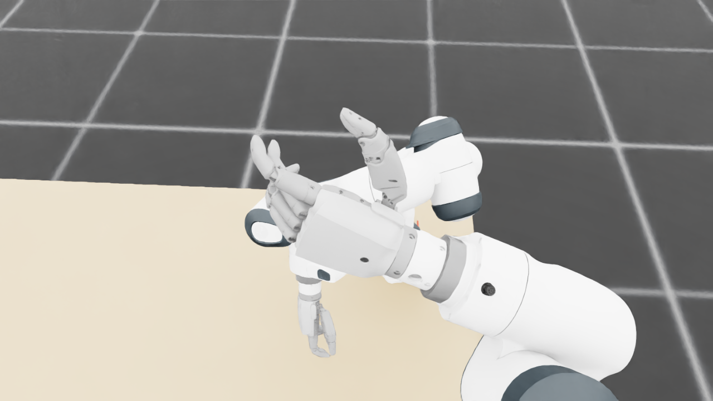
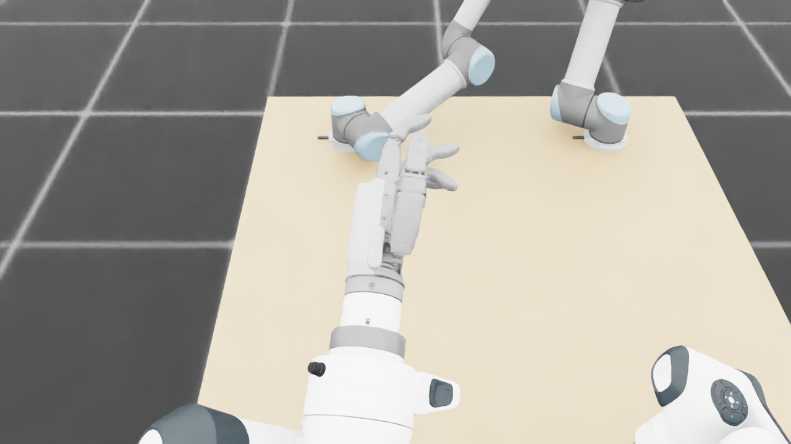
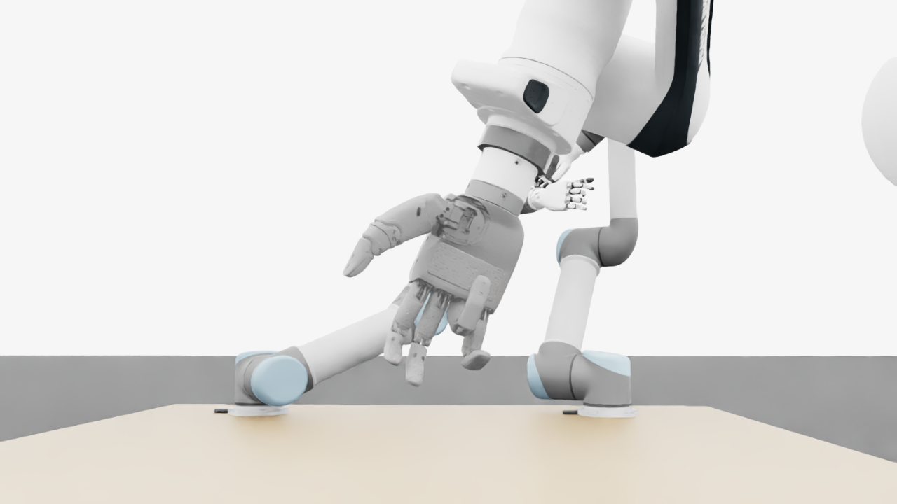
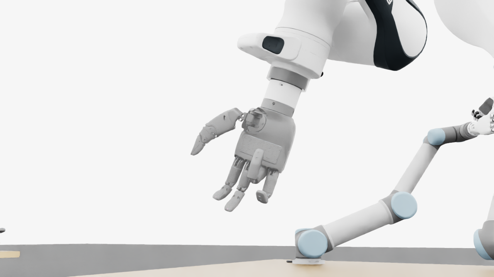
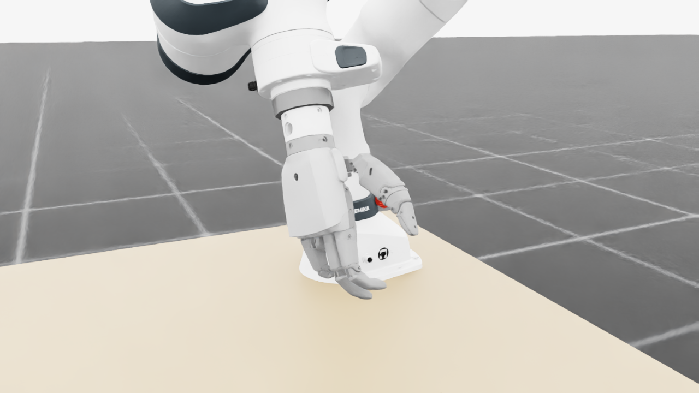
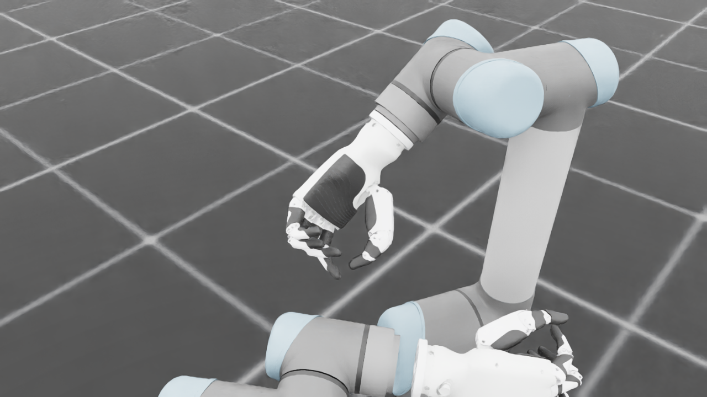
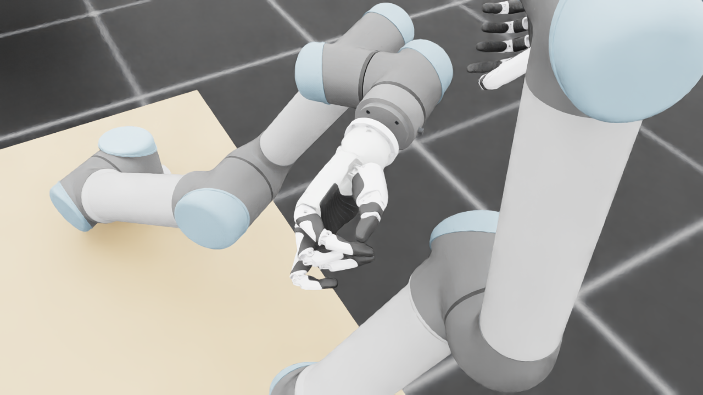
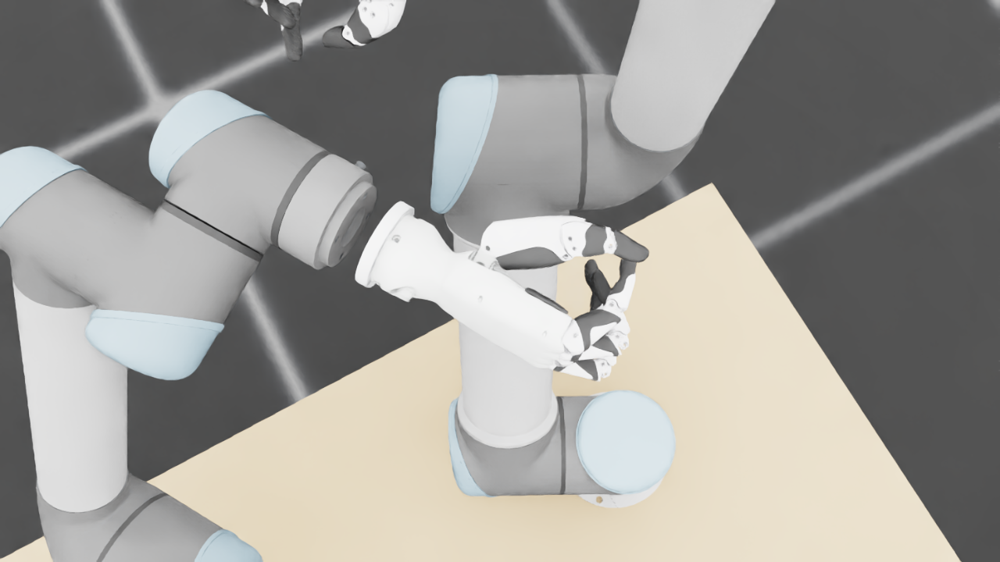
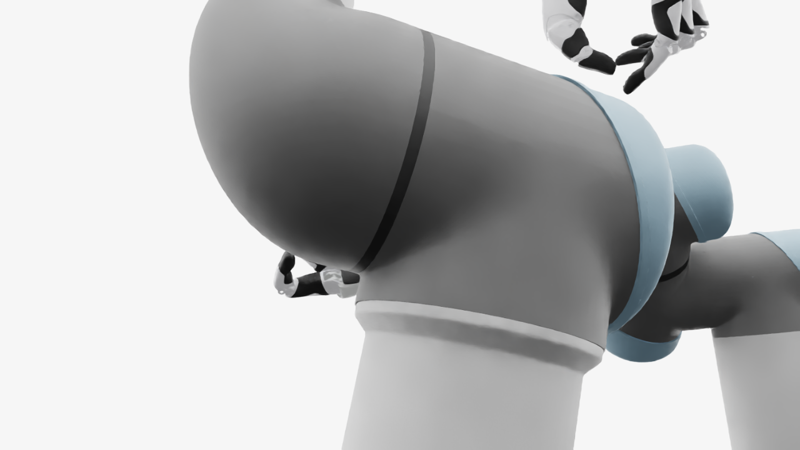
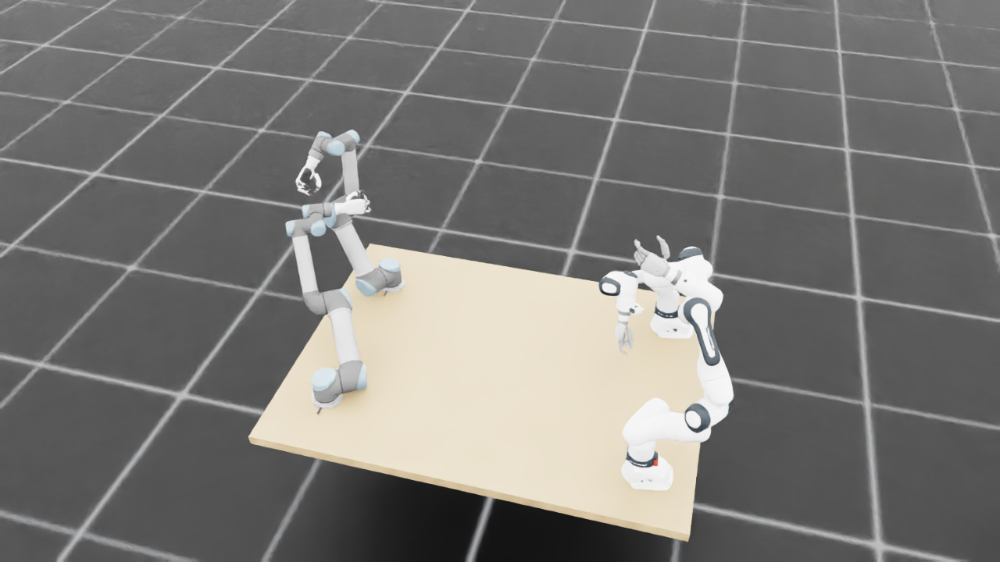
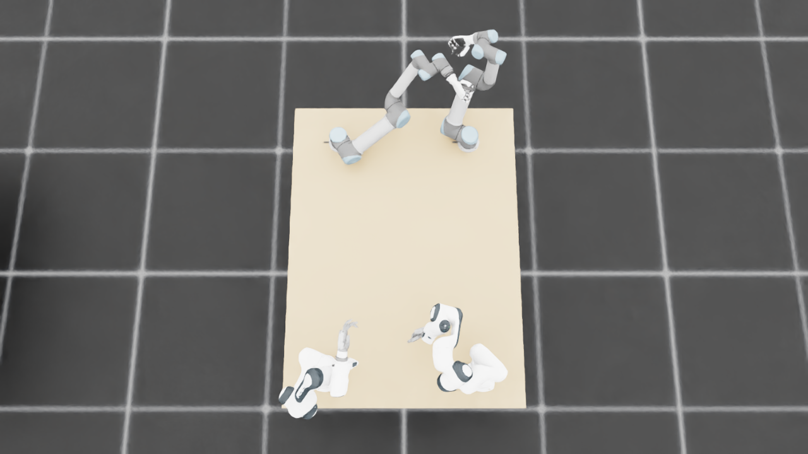
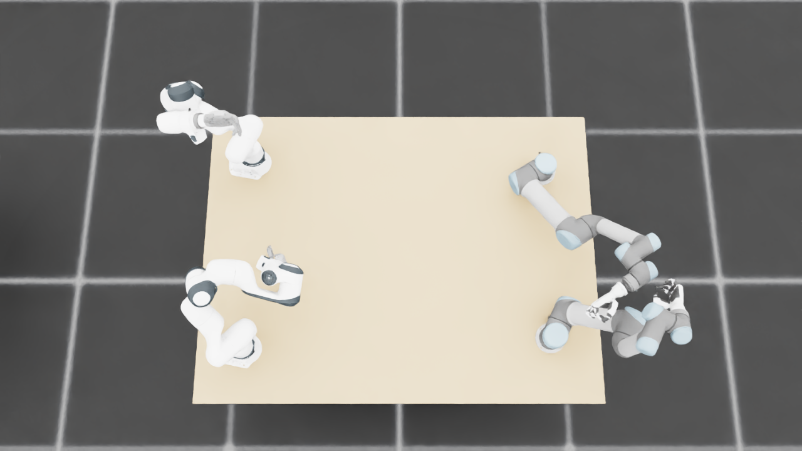
{
"qualified": true,
"arms": {
"F_L": {
"qualified": true,
"palm_visual_peak_pixels": 25900,
"finger_family_peak_pixels": {
"thumb": 9518,
"index": 5490,
"middle": 3077,
"ring": 2773,
"little": 3981
},
"per_native_body_peak_pixels": {
"/World/envs/env_29/F_L/f2_hand/left_hand_base": 31551,
"/World/envs/env_29/F_L/f2_hand/left_index_1": 3289,
"/World/envs/env_29/F_L/f2_hand/left_middle_1": 1718,
"/World/envs/env_29/F_L/f2_hand/left_pinky_1": 2474,
"/World/envs/env_29/F_L/f2_hand/left_ring_1": 1822,
"/World/envs/env_29/F_L/f2_hand/left_thumb_1": 779,
"/World/envs/env_29/F_L/f2_hand/left_index_2": 2201,
"/World/envs/env_29/F_L/f2_hand/left_middle_2": 1359,
"/World/envs/env_29/F_L/f2_hand/left_pinky_2": 1507,
"/World/envs/env_29/F_L/f2_hand/left_ring_2": 1355,
"/World/envs/env_29/F_L/f2_hand/left_thumb_2": 4789,
"/World/envs/env_29/F_L/f2_hand/left_thumb_3": 2187,
"/World/envs/env_29/F_L/f2_hand/left_thumb_4": 2217
},
"native_body_visibility_gaps": [],
"all_native_hand_bodies_observed": true,
"full_mesh_coverage_certified": false,
"all_recorded_attempt_peak": {
"qualified": false,
"palm_visual_peak_pixels": 29865,
"finger_family_peak_pixels": {
"thumb": 10136,
"index": 5490,
"middle": 4043,
"ring": 3573,
"little": 3981
},
"per_native_body_peak_pixels": {
"/World/envs/env_29/F_L/f2_hand/left_hand_base": 36350,
"/World/envs/env_29/F_L/f2_hand/left_index_1": 3289,
"/World/envs/env_29/F_L/f2_hand/left_middle_1": 2089,
"/World/envs/env_29/F_L/f2_hand/left_pinky_1": 2474,
"/World/envs/env_29/F_L/f2_hand/left_ring_1": 2048,
"/World/envs/env_29/F_L/f2_hand/left_thumb_1": 841,
"/World/envs/env_29/F_L/f2_hand/left_index_2": 2201,
"/World/envs/env_29/F_L/f2_hand/left_middle_2": 1954,
"/World/envs/env_29/F_L/f2_hand/left_pinky_2": 1507,
"/World/envs/env_29/F_L/f2_hand/left_ring_2": 1525,
"/World/envs/env_29/F_L/f2_hand/left_thumb_2": 5210,
"/World/envs/env_29/F_L/f2_hand/left_thumb_3": 2187,
"/World/envs/env_29/F_L/f2_hand/left_thumb_4": 2217
},
"native_body_visibility_gaps": [],
"all_native_hand_bodies_observed": true,
"full_mesh_coverage_certified": false,
"qualification": false
},
"attempts": 7,
"decoded": 7
},
"F_R": {
"qualified": true,
"palm_visual_peak_pixels": 20771,
"finger_family_peak_pixels": {
"thumb": 8127,
"index": 4309,
"middle": 3377,
"ring": 3103,
"little": 2620
},
"per_native_body_peak_pixels": {
"/World/envs/env_29/F_R/f2_hand/right_hand_base": 25587,
"/World/envs/env_29/F_R/f2_hand/right_index_1": 2668,
"/World/envs/env_29/F_R/f2_hand/right_middle_1": 1789,
"/World/envs/env_29/F_R/f2_hand/right_pinky_1": 1735,
"/World/envs/env_29/F_R/f2_hand/right_ring_1": 860,
"/World/envs/env_29/F_R/f2_hand/right_thumb_1": 699,
"/World/envs/env_29/F_R/f2_hand/right_index_2": 1641,
"/World/envs/env_29/F_R/f2_hand/right_middle_2": 1671,
"/World/envs/env_29/F_R/f2_hand/right_pinky_2": 913,
"/World/envs/env_29/F_R/f2_hand/right_ring_2": 2243,
"/World/envs/env_29/F_R/f2_hand/right_thumb_2": 4259,
"/World/envs/env_29/F_R/f2_hand/right_thumb_3": 1837,
"/World/envs/env_29/F_R/f2_hand/right_thumb_4": 1729
},
"native_body_visibility_gaps": [],
"all_native_hand_bodies_observed": true,
"full_mesh_coverage_certified": false,
"all_recorded_attempt_peak": {
"qualified": false,
"palm_visual_peak_pixels": 27475,
"finger_family_peak_pixels": {
"thumb": 8127,
"index": 4309,
"middle": 3723,
"ring": 3103,
"little": 2762
},
"per_native_body_peak_pixels": {
"/World/envs/env_29/F_R/f2_hand/right_hand_base": 33476,
"/World/envs/env_29/F_R/f2_hand/right_index_1": 2668,
"/World/envs/env_29/F_R/f2_hand/right_middle_1": 2286,
"/World/envs/env_29/F_R/f2_hand/right_pinky_1": 1976,
"/World/envs/env_29/F_R/f2_hand/right_ring_1": 915,
"/World/envs/env_29/F_R/f2_hand/right_thumb_1": 699,
"/World/envs/env_29/F_R/f2_hand/right_index_2": 1641,
"/World/envs/env_29/F_R/f2_hand/right_middle_2": 1671,
"/World/envs/env_29/F_R/f2_hand/right_pinky_2": 913,
"/World/envs/env_29/F_R/f2_hand/right_ring_2": 2243,
"/World/envs/env_29/F_R/f2_hand/right_thumb_2": 4259,
"/World/envs/env_29/F_R/f2_hand/right_thumb_3": 1837,
"/World/envs/env_29/F_R/f2_hand/right_thumb_4": 1729
},
"native_body_visibility_gaps": [],
"all_native_hand_bodies_observed": true,
"full_mesh_coverage_certified": false,
"qualification": false
},
"attempts": 6,
"decoded": 6
},
"U_L": {
"qualified": true,
"palm_visual_peak_pixels": 8732,
"finger_family_peak_pixels": {
"thumb": 6758,
"index": 2948,
"middle": 1735,
"ring": 1602,
"little": 2531
},
"per_native_body_peak_pixels": {
"/World/envs/env_29/U_L/wrist_3_link": 27776,
"/World/envs/env_29/U_L/left_index_1": 1798,
"/World/envs/env_29/U_L/left_little_1": 1458,
"/World/envs/env_29/U_L/left_middle_1": 1211,
"/World/envs/env_29/U_L/left_ring_1": 1221,
"/World/envs/env_29/U_L/left_thumb_1": 287,
"/World/envs/env_29/U_L/left_index_2": 1150,
"/World/envs/env_29/U_L/left_little_2": 1073,
"/World/envs/env_29/U_L/left_middle_2": 963,
"/World/envs/env_29/U_L/left_ring_2": 1052,
"/World/envs/env_29/U_L/left_thumb_2": 3935,
"/World/envs/env_29/U_L/left_thumb_3": 1788,
"/World/envs/env_29/U_L/left_thumb_4": 772
},
"native_body_visibility_gaps": [],
"all_native_hand_bodies_observed": true,
"full_mesh_coverage_certified": false,
"all_recorded_attempt_peak": {
"qualified": false,
"palm_visual_peak_pixels": 8732,
"finger_family_peak_pixels": {
"thumb": 6758,
"index": 2948,
"middle": 1735,
"ring": 1636,
"little": 2531
},
"per_native_body_peak_pixels": {
"/World/envs/env_29/U_L/wrist_3_link": 32572,
"/World/envs/env_29/U_L/left_index_1": 1798,
"/World/envs/env_29/U_L/left_little_1": 1458,
"/World/envs/env_29/U_L/left_middle_1": 1225,
"/World/envs/env_29/U_L/left_ring_1": 1294,
"/World/envs/env_29/U_L/left_thumb_1": 287,
"/World/envs/env_29/U_L/left_index_2": 1150,
"/World/envs/env_29/U_L/left_little_2": 1073,
"/World/envs/env_29/U_L/left_middle_2": 963,
"/World/envs/env_29/U_L/left_ring_2": 1052,
"/World/envs/env_29/U_L/left_thumb_2": 3935,
"/World/envs/env_29/U_L/left_thumb_3": 1788,
"/World/envs/env_29/U_L/left_thumb_4": 772
},
"native_body_visibility_gaps": [],
"all_native_hand_bodies_observed": true,
"full_mesh_coverage_certified": false,
"qualification": false
},
"attempts": 4,
"decoded": 4
},
"U_R": {
"qualified": true,
"palm_visual_peak_pixels": 4003,
"finger_family_peak_pixels": {
"thumb": 10704,
"index": 4936,
"middle": 3158,
"ring": 1786,
"little": 4298
},
"per_native_body_peak_pixels": {
"/World/envs/env_29/U_R/wrist_3_link": 37194,
"/World/envs/env_29/U_R/right_index_1": 2848,
"/World/envs/env_29/U_R/right_little_1": 2699,
"/World/envs/env_29/U_R/right_middle_1": 1560,
"/World/envs/env_29/U_R/right_ring_1": 379,
"/World/envs/env_29/U_R/right_thumb_1": 401,
"/World/envs/env_29/U_R/right_index_2": 2259,
"/World/envs/env_29/U_R/right_little_2": 1633,
"/World/envs/env_29/U_R/right_middle_2": 1598,
"/World/envs/env_29/U_R/right_ring_2": 1580,
"/World/envs/env_29/U_R/right_thumb_2": 6414,
"/World/envs/env_29/U_R/right_thumb_3": 2626,
"/World/envs/env_29/U_R/right_thumb_4": 1457
},
"native_body_visibility_gaps": [],
"all_native_hand_bodies_observed": true,
"full_mesh_coverage_certified": false,
"all_recorded_attempt_peak": {
"qualified": false,
"palm_visual_peak_pixels": 4078,
"finger_family_peak_pixels": {
"thumb": 10704,
"index": 4936,
"middle": 3678,
"ring": 1786,
"little": 4298
},
"per_native_body_peak_pixels": {
"/World/envs/env_29/U_R/wrist_3_link": 72262,
"/World/envs/env_29/U_R/right_index_1": 3156,
"/World/envs/env_29/U_R/right_little_1": 2701,
"/World/envs/env_29/U_R/right_middle_1": 2566,
"/World/envs/env_29/U_R/right_ring_1": 1450,
"/World/envs/env_29/U_R/right_thumb_1": 401,
"/World/envs/env_29/U_R/right_index_2": 2259,
"/World/envs/env_29/U_R/right_little_2": 1633,
"/World/envs/env_29/U_R/right_middle_2": 1598,
"/World/envs/env_29/U_R/right_ring_2": 1580,
"/World/envs/env_29/U_R/right_thumb_2": 6414,
"/World/envs/env_29/U_R/right_thumb_3": 2626,
"/World/envs/env_29/U_R/right_thumb_4": 1457
},
"native_body_visibility_gaps": [],
"all_native_hand_bodies_observed": true,
"full_mesh_coverage_certified": false,
"qualification": false
},
"attempts": 10,
"decoded": 10
}
},
"wide": {
"qualified": true,
"per_native_object_peak_pixels": {
"/World/envs/env_29/F_L/fr3_link0": 2401,
"/World/envs/env_29/F_L/fr3_link1": 2133,
"/World/envs/env_29/F_L/fr3_link2": 2468,
"/World/envs/env_29/F_L/fr3_link3": 2237,
"/World/envs/env_29/F_L/fr3_link4": 1474,
"/World/envs/env_29/F_L/fr3_link5": 3186,
"/World/envs/env_29/F_L/fr3_link6": 1246,
"/World/envs/env_29/F_L/fr3_link7": 1344,
"/World/envs/env_29/F_L/fr3_link8": 220,
"/World/envs/env_29/F_L/f2_hand/left_hand_base": 964,
"/World/envs/env_29/F_L/f2_hand/left_index_1": 118,
"/World/envs/env_29/F_L/f2_hand/left_middle_1": 73,
"/World/envs/env_29/F_L/f2_hand/left_pinky_1": 49,
"/World/envs/env_29/F_L/f2_hand/left_ring_1": 62,
"/World/envs/env_29/F_L/f2_hand/left_thumb_1": 8,
"/World/envs/env_29/F_L/f2_hand/left_index_2": 84,
"/World/envs/env_29/F_L/f2_hand/left_middle_2": 95,
"/World/envs/env_29/F_L/f2_hand/left_pinky_2": 74,
"/World/envs/env_29/F_L/f2_hand/left_ring_2": 65,
"/World/envs/env_29/F_L/f2_hand/left_thumb_2": 134,
"/World/envs/env_29/F_L/f2_hand/left_thumb_3": 59,
"/World/envs/env_29/F_L/f2_hand/left_thumb_4": 79,
"/World/envs/env_29/F_R/fr3_link0": 1478,
"/World/envs/env_29/F_R/fr3_link1": 2109,
"/World/envs/env_29/F_R/fr3_link2": 3090,
"/World/envs/env_29/F_R/fr3_link3": 1770,
"/World/envs/env_29/F_R/fr3_link4": 3664,
"/World/envs/env_29/F_R/fr3_link5": 3404,
"/World/envs/env_29/F_R/fr3_link6": 2042,
"/World/envs/env_29/F_R/fr3_link7": 455,
"/World/envs/env_29/F_R/fr3_link8": 73,
"/World/envs/env_29/F_R/f2_hand/right_hand_base": 454,
"/World/envs/env_29/F_R/f2_hand/right_index_1": 49,
"/World/envs/env_29/F_R/f2_hand/right_middle_1": 5,
"/World/envs/env_29/F_R/f2_hand/right_pinky_1": 1,
"/World/envs/env_29/F_R/f2_hand/right_ring_1": 15,
"/World/envs/env_29/F_R/f2_hand/right_thumb_1": 10,
"/World/envs/env_29/F_R/f2_hand/right_index_2": 34,
"/World/envs/env_29/F_R/f2_hand/right_middle_2": 5,
"/World/envs/env_29/F_R/f2_hand/right_pinky_2": 14,
"/World/envs/env_29/F_R/f2_hand/right_ring_2": 7,
"/World/envs/env_29/F_R/f2_hand/right_thumb_2": 130,
"/World/envs/env_29/F_R/f2_hand/right_thumb_3": 38,
"/World/envs/env_29/F_R/f2_hand/right_thumb_4": 36,
"/World/envs/env_29/U_L/base_link": 455,
"/World/envs/env_29/U_L/shoulder_link": 1818,
"/World/envs/env_29/U_L/upper_arm_link": 4893,
"/World/envs/env_29/U_L/forearm_link": 3070,
"/World/envs/env_29/U_L/wrist_1_link": 1618,
"/World/envs/env_29/U_L/wrist_2_link": 1353,
"/World/envs/env_29/U_L/wrist_3_link": 919,
"/World/envs/env_29/U_L/left_index_1": 62,
"/World/envs/env_29/U_L/left_little_1": 81,
"/World/envs/env_29/U_L/left_middle_1": 56,
"/World/envs/env_29/U_L/left_ring_1": 30,
"/World/envs/env_29/U_L/left_thumb_1": 22,
"/World/envs/env_29/U_L/left_index_2": 71,
"/World/envs/env_29/U_L/left_little_2": 59,
"/World/envs/env_29/U_L/left_middle_2": 79,
"/World/envs/env_29/U_L/left_ring_2": 53,
"/World/envs/env_29/U_L/left_thumb_2": 221,
"/World/envs/env_29/U_L/left_thumb_3": 66,
"/World/envs/env_29/U_L/left_thumb_4": 26,
"/World/envs/env_29/U_R/base_link": 375,
"/World/envs/env_29/U_R/shoulder_link": 1412,
"/World/envs/env_29/U_R/upper_arm_link": 6371,
"/World/envs/env_29/U_R/forearm_link": 3275,
"/World/envs/env_29/U_R/wrist_1_link": 1309,
"/World/envs/env_29/U_R/wrist_2_link": 1216,
"/World/envs/env_29/U_R/wrist_3_link": 1436,
"/World/envs/env_29/U_R/right_index_1": 117,
"/World/envs/env_29/U_R/right_little_1": 61,
"/World/envs/env_29/U_R/right_middle_1": 67,
"/World/envs/env_29/U_R/right_ring_1": 15,
"/World/envs/env_29/U_R/right_thumb_1": 14,
"/World/envs/env_29/U_R/right_index_2": 69,
"/World/envs/env_29/U_R/right_little_2": 54,
"/World/envs/env_29/U_R/right_middle_2": 56,
"/World/envs/env_29/U_R/right_ring_2": 7,
"/World/envs/env_29/U_R/right_thumb_2": 238,
"/World/envs/env_29/U_R/right_thumb_3": 99,
"/World/envs/env_29/U_R/right_thumb_4": 58,
"/World/envs/env_29/TableF": 121291,
"/World/envs/env_29/TableU": 129865
},
"arm_peak_pixels": {
"F_L": 16440,
"F_R": 17964,
"U_L": 14952,
"U_R": 15938
},
"table_peak_pixels": {
"TableF": 121291,
"TableU": 129865
},
"critical_body_peak_pixels": {
"/World/envs/env_29/U_L/forearm_link": 3070,
"/World/envs/env_29/U_L/wrist_2_link": 1353,
"/World/envs/env_29/U_R/forearm_link": 3275,
"/World/envs/env_29/U_R/wrist_2_link": 1216
}
},
"raw_attempt_count": 37,
"PNG_count": 37,
"angle_records": 37,
"max_actual_angle_identity_error_deg": 0.0,
"held_snapshot_checks": 1676,
"universal_visibility_impossible": false,
"full_mesh_coverage_certified": false
}